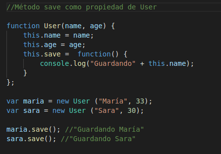
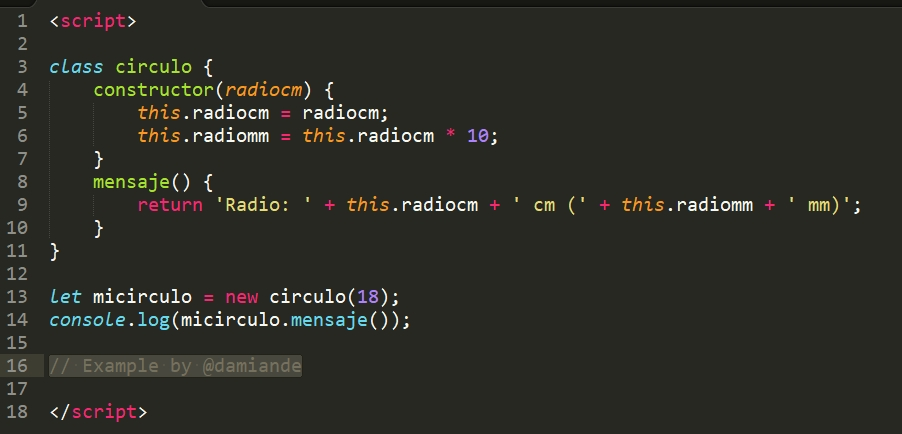
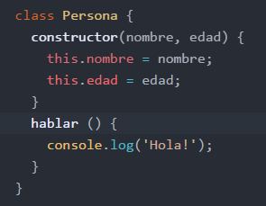
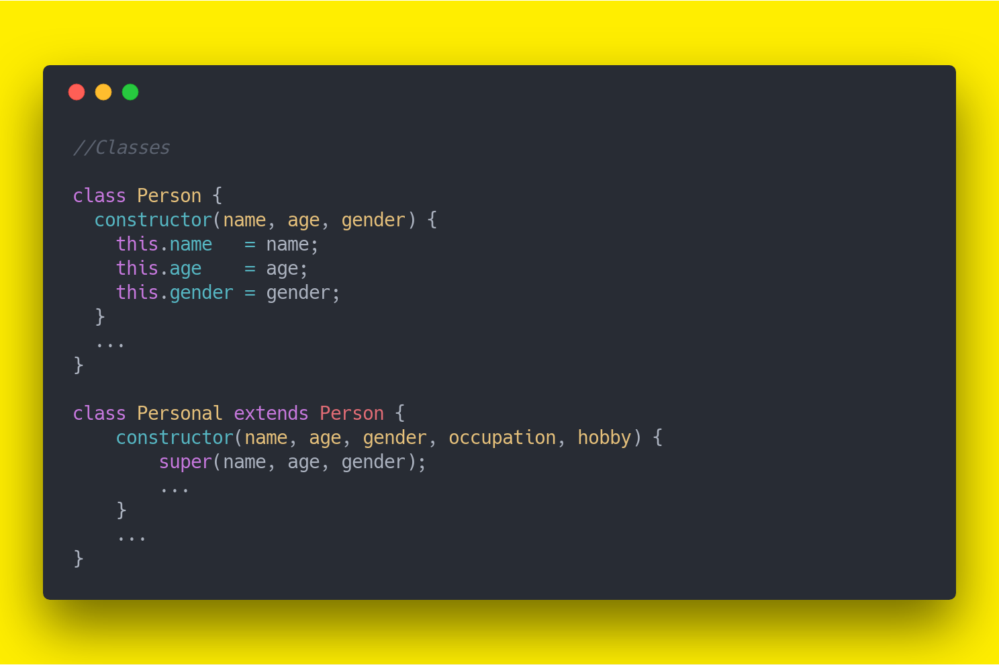

Es un paradigma de programación que usa objetos y sus interacciones, para diseñar aplicaciones y programas informáticos. Está basado en varias técnicas, incluyendo herencia, abstracción, polimorfismo y encapsulamiento. Su uso se popularizó a principios de la década de los años 1990. En la actualidad, existe variedad de lenguajes de programación que soportan la orientación a objetos.
Una Clase puede heredar características de otra Clase.
La herencia es una manera de crear una clase como una versión especializada de una o más clases (JavaScript sólo permite herencia simple). La clase especializada comúnmente se llama hija o secundaria, y la otra clase se le llama padre o primaria. En JavaScript la herencia se logra mediante la asignación de una instancia de la clase primaria a la clase secundaria, y luego se hace la especialización.
La conjunción de herencia compleja, métodos y propiedades que un objeto debe ser capaz de simular en un modelo de la realidad.
Un mecanismo que permite modelar la parte actual del problema de trabajo. Esto se puede lograr por herencia (especialización) o por composición. JavaScript logra la especialización por herencia y por composición al permitir que las instancias de clases sean los valores de los atributos de otros objetos.
Poner la lógica del negocio en un método,una Clase sólo define las características del Objeto, un Método sólo define cómo se ejecuta el Método.
Diferentes Clases podrían definir el mismo método o propieda
Esta es la capacidad del objeto para referir otro objeto independiente. Cuando las clases se conectan de forma conceptual, se le llama Asociación.
